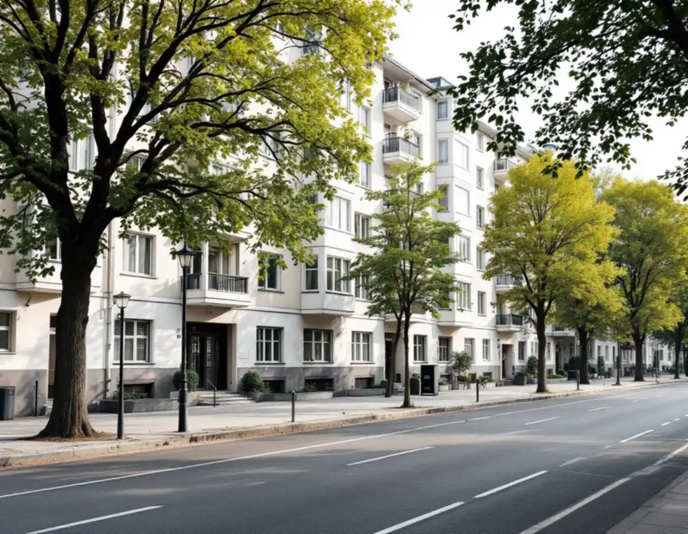
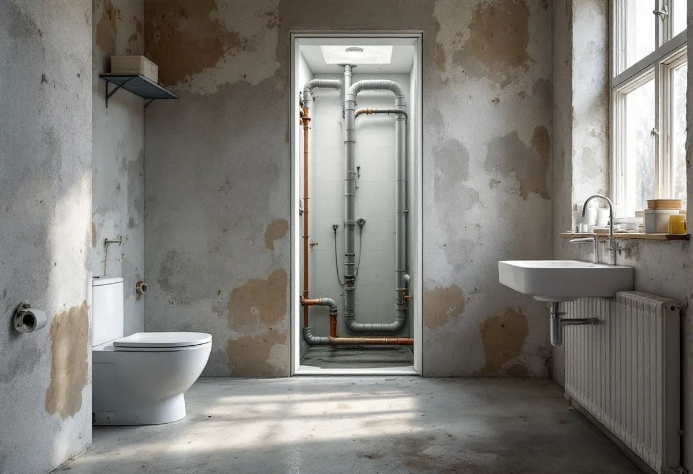
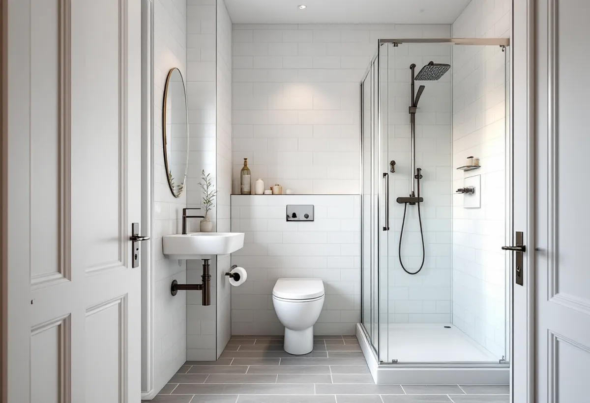

Platsbesök
Vi går igenom stammar, schakt och några typlägenheter med styrelsen.

På Kungsholmen är det oftast en bostadsrättsförening som beställer de stora byggprojekten, och stambytet är det största av dem.
Beskriv jobbet kort.
Något blev fel. Kontrollera uppgifterna eller ring 08 12 410 276.
Vi tittar på jobbet på plats innan du får offert.
Du ser vad som ingår och vad det kostar.
Vi drar av ROT direkt och sköter ansökan.
Geal Entreprenad AB, Bromma. Org.nr 559303-7566.

Geal Entreprenad AB tar på sig stambyten och ombyggnader för föreningar på Kungsholmen och hjälper styrelsen att reda ut vad som kräver anmälan.
Stockholms stads områdesfakta visar att det 2024 fanns 44 554 bostäder i Kungsholmens stadsdelsområde. Av dem låg 42 420 i flerbostadshus, och 30 598 var bostadsrätter. Bara 337 bostäder ägdes med äganderätt.
Det betyder att ett stambyte i regel är en fråga för en förening. Styrelsen är beställare, och det är föreningen som behöver ha koll på reglerna, medan medlemmarna påverkas i sina egna badrum och kök.

Stockholms stad skriver att ett stambyte oftast innebär att befintliga installationer byts i samma läge, och då behövs ingen anmälan. Anmälan och startbesked krävs däremot om VA-stammar placeras i nya lägen eller om stambytet innebär väsentliga ingrepp i byggnadens bärande konstruktion.
Oavsett om anmälan krävs eller inte ska arbetet utföras enligt gällande regler för våtrum och vatteninstallationer. Är ni osäkra på om ett ingrepp är väsentligt för bärigheten bör en konstruktör bedöma det innan projekteringen är klar.
Staden påpekar att tillgängligheten inte får försämras vid ett stambyte. Exempel på försämring är att golven i wc eller badrum höjs, att inredning placeras olämpligt eller att dörröppningar blir för smala.
I ett äldre hus är det lätt att golvet växer när nya fall, tätskikt och klinker läggs ovanpå det gamla. Därför planerar vi golvnivåerna tidigt och tar med dem i underlaget som styrelsen och medlemmarna får se.
Ett stambyte kan vara en del av en större ombyggnad. Staden förklarar att en ombyggnad innebär att hela eller en betydande och avgränsbar del av byggnaden förnyas på ett påtagligt sätt, och då gäller ansökan eller anmälan hela byggnaden.
Vid en ombyggnad där tappvarmvattnet installeras nytt eller ändras väsentligt ska individuell mätning och debitering, IMD, av tappvarmvatten installeras i befintliga flerbostadshus. Det är en fråga att ta upp redan när omfattningen bestäms.
Ett stambyte berör varje lägenhet i huset, och de boende märker det mest. Vi lägger upp arbetet trappuppgång för trappuppgång, så att varje lägenhet står utan badrum så kort tid som möjligt, och styrelsen får en plan som går att dela med medlemmarna i god tid.
Information är halva arbetet. Vi lämnar besked om när vattnet stängs av, när det låter som mest och hur dammet hålls inne. Medlemmar som behöver tillgång till dusch och toalett under tiden får veta i förväg hur det är ordnat.
Bostadsrättslagen säger att bostadsrättshavaren inte svarar för reparationer av ledningar för avlopp, värme, gas, elektricitet och vatten om föreningen har försett lägenheten med ledningarna och de tjänar fler än en lägenhet. Stammarna är alltså föreningens sak, medan medlemmen håller lägenheten i övrigt i gott skick om inte stadgarna säger annat.
Många medlemmar vill passa på att göra om badrummet efter egen smak när stammarna ändå byts. Vi hjälper föreningen att skilja grundstandard från tillval, så att det blir tydligt vad föreningen betalar och vad medlemmen betalar. Om enskilda badrum kan du läsa under badrumsrenovering på Kungsholmen.
Vi går igenom stammar, schakt och några typlägenheter med styrelsen.
Anmälan, bärighet, tillgänglighet och IMD reds ut.
Grundstandard och tillval beskrivs så att medlemmarna kan ta ställning.
Varje del och varje tillval står för sig.
Trappuppgång för trappuppgång, med information till de boende.
Intyg och dokumentation lämnas till föreningen.
Föreningens arbete på stammar och andra gemensamma delar ger inget rotavdrag. Skatteverket ger avdrag i en bostadsrätt bara för arbete inne i bostaden som medlemmen själv ansvarar för.
Bekostar en medlem tillval i sitt eget badrum kan den delen ge avdrag. Rotavdraget är 30 procent av arbetskostnaden, högst 50 000 kronor per person och år och högst 75 000 kronor tillsammans med rutavdrag. Material och resor ger inget avdrag, och du ska äga bostaden när arbetet utförs.
Antalet lägenheter och stammar, om stammarna kan ligga kvar i samma läge, golvnivåerna och omfattningen av tillval. Efter ett gratis platsbesök får styrelsen ett skriftligt kostnadsförslag.
Total entreprenad för villan.
Byggfirma →Takbyte, takbesiktning och plåtarbeten.
Takläggare på Kungsholmen →Plåttak i stenstaden och funkis i Fredhäll.
Takrenovering på Kungsholmen →Gårdshus vid villorna på Stora Essingen.
Attefallshus på Kungsholmen →Stambyte, stämmobeslut och 30-talshus.
Badrumsrenovering på Kungsholmen →Målning av puts och gårdsfasader.
Fasadmålning på Kungsholmen →Slätputs på funkishus, lagad utan synliga skarvar.
Fasadrenovering på Kungsholmen →Stenhusen, funkishusen och bygglovet.
Fönsterbyte på Kungsholmen →Fönstret i bostadsrätten, insida och beslag.
Fönsterrenovering på Kungsholmen →Stegljud, golvval och styrelsens tillstånd.
Golvläggare på Kungsholmen →Slipa och lacka golvet i bostadsrätten.
Golvslipning på Kungsholmen →Fläkten, kanalen och föreningen.
Köksrenovering på Kungsholmen →Funkislägenheter, stadgar och ROT i bostadsrätten.
Målare på Kungsholmen →Huvar, skorstenar och genomföringar.
Plåtslagare på Kungsholmen →Förvaring och platsbyggt i små lägenheter.
Snickare på Kungsholmen →Villorna på Stora Essingen.
Takbyte på Kungsholmen →Ny tapet på putsade lägenhetsväggar.
Tapetsering på Kungsholmen →Uterum, kupor och skärmtak.
Tillbyggnad på Kungsholmen →Hela lägenheten från golv till tak.
Totalrenovering på Kungsholmen →Eller ring 08 12 410 276, mån–fre 08–17.
Beskriv jobbet kort.
Något blev fel. Kontrollera uppgifterna eller ring 08 12 410 276.